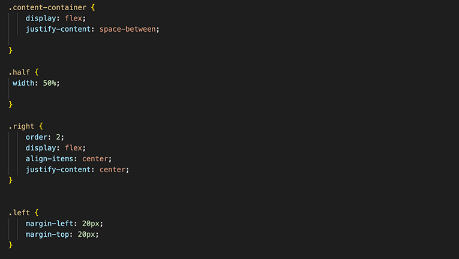

Flexbox
Introductie
Afgelopen tijd heb ik veelal geprobeerd mijn websites in flexbox te krijgen.
manier 1
Masterclass
De eerste manier van flexbox and grid ben ik in aanraking gekomen met de masterclass van Maikel. Het was de introduciteles van de masterclass en deze manier van opbouwen heb ik meegenomen omdat alles netjes in section zit en duidelijk en overzichtelijk te zien is.
Ik heb voor deze masterclass ook een aparte sectie gemaakt, waar ook de andere gemaakt resultaten te zien zijn. Masterclass
Links
Masterclassleerportfolio
Voor deze website heb ik eveneens gebruikgemaakt van de masterclassflexbox voor de lay-out. Ik ondervond echter enkele uitdagingen met betrekking tot de knoppen. Wanneer ik een kleiner schermformaat gebruikte, merkte ik op dat de knoppen buiten het zichtbare gedeelte van het scherm vielen. Dit probleem werd veroorzaakt door een CSS-eigenschap die steeds mijn flexbox-instellingen overschreef.
manier 2
webarchive
Voor deze website heb ik geëxperimenteerd met het gebruik van flexbox om de lay-out te optimaliseren. Mijn doel was om de inhoud zowel aan de linkerkant als aan de rechterkant van de pagina te plaatsen. Aan de ene kant wilde ik knoppen positioneren, terwijl ik aan de andere kant een carrousel wilde weergeven om afbeeldingen te laten zien.
Tijdens mijn onderzoek besloot ik om te zien welke suggestie chatgpt zou geven, en het kwam met het idee van het gebruik van de `.half`-klasse. Dit voorstel sprak me aan vanwege de logische benadering en leek me interessant om mee te experimenteren.

Links
Website